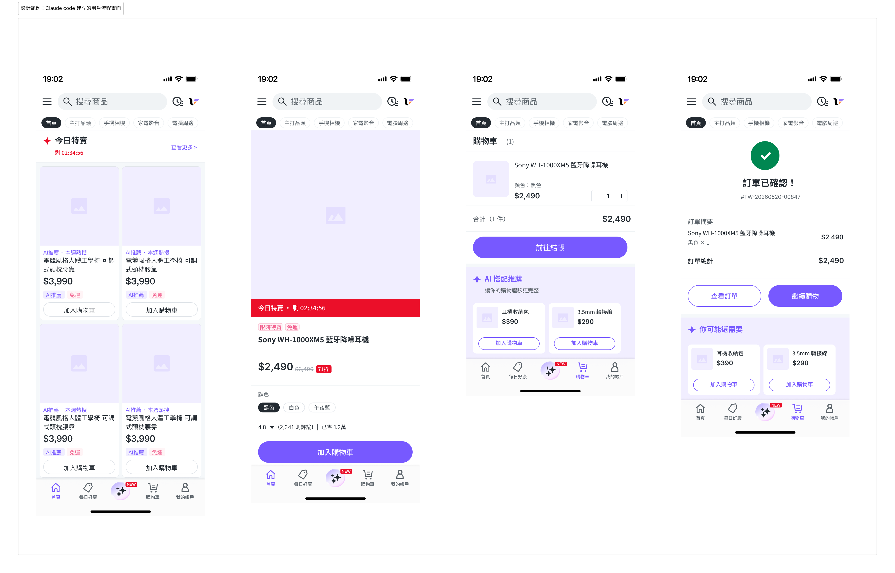

20
26
2026
設計提案跨多個畫面時，旅程 Brief 這樣寫
單一畫面的 Brief 行不通了——當你的提案橫跨首頁、商品頁、購物車到訂單確認， AI 需要理解的不只是「這個畫面長什麼樣」，而是「使用者從哪來、往哪去、每個畫面承擔什麼責任」。
你已經學會用 Part 1 的單一畫面 Brief 告訴 AI「這個購物車頁面長什麼樣」。 現在你的提案變複雜了：你想展示的不是一個畫面，而是一段完整的購買旅程—— 從首頁看到促銷，點進商品頁確認規格，加入購物車後結帳，最後抵達訂單確認頁。
「旅程 Brief 的核心問題不是『每個畫面長什麼樣』，而是『使用者從哪來、現在有什麼動機、這個畫面的任務是讓他往哪去』。」
四個畫面分別送出四份單一畫面 Brief，AI 會建置出四個互不相關的畫面。 它不知道首頁的 Banner 文案要與購物車的商品呼應，不知道商品頁的「加入購物車」CTA 決定了購物車頁的進入動機，更不知道訂單確認頁應該強化剛才整段旅程的購買決策。 跨畫面的敘事連貫性，必須在 Brief 裡明確建立。
單一畫面 Brief 的七個欄位（概念、假說、差異化、主要行動、Section 清單、內容細節、設計約束） 在旅程 Brief 裡全部保留。旅程 Brief 在此基礎上新增了三個層次， 專門處理多畫面提案特有的資訊需求。
旅程範疇（Journey Scope）
新增層次 · 第一個填
這段旅程從哪個畫面開始、到哪個畫面結束。 明確邊界讓 AI 知道哪些畫面需要建置、哪些是上下文參考。 同時說明旅程的設計目標：整段旅程想讓使用者完成什麼任務。
畫面清單（Screen Inventory）
新增層次 · 第二個填
依序列出所有畫面，每個畫面說明三件事：① 使用者從哪來（Entry） ② 這個畫面的核心任務（Task）③ 使用者往哪去（Exit）。 這是旅程 Brief 最重要的欄位。
流程邏輯（Flow Logic）
新增層次 · 第三個填
說明畫面之間的過渡邏輯：哪些元素必須在畫面間保持一致 （商品名稱、圖片、價格），哪些畫面有條件分支（登入 vs. 訪客結帳）， 以及哪個畫面是整段旅程的情感高點。 流程邏輯告訴 AI 連貫性的邊界在哪裡。
| 欄位 | 單一畫面 Brief | 旅程 Brief（新增） |
|---|---|---|
| 設計目標 | 這個畫面的主要行動 | 整段旅程的完成任務 |
| 畫面說明 | 單一畫面的 Section 清單 | 每個畫面的 Entry / Task / Exit |
| 跨畫面一致性 | 不需要 | 必須列出哪些元素需保持一致 |
| 條件分支 | 不需要 | 需說明有哪些路徑分歧 |
| 情感節拍 | 不需要 | 哪個畫面是旅程的情感高點 |
畫面清單（Screen Inventory）是旅程 Brief 的核心結構。 每個畫面都必須回答三個問題，缺少任何一個，AI 就只能猜測這個畫面在旅程中的位置。
Entry — 使用者從哪來
使用者是從哪個畫面或哪個行動進入這個畫面的？ 這決定了使用者進入時的認知狀態和動機強度。 「從首頁 Banner 點擊進入」和「從搜尋結果點擊進入」是完全不同的進入情境， 應有不同的畫面設計重點。
Task — 這個畫面的核心任務
這個畫面在整段旅程中承擔什麼責任？使用者需要在這裡完成什麼認知或行動， 才能繼續往下走？Task 不是「展示商品資訊」，而是「讓使用者從『好奇』變成『確認想買』」—— 描述的是認知轉換，而不是功能清單。
Exit — 使用者往哪去
使用者完成這個畫面的任務後，前往哪個畫面？ Exit 決定了這個畫面的主要 CTA 是什麼、放在哪裡。 如果 Exit 有多個（如購物車頁可以繼續購物或直接結帳）， 需要說明哪個是主要 Exit、哪個是次要 Exit。
寫法提示
Entry / Task / Exit 的描述要具體到使用者的動機和認知狀態， 不是功能描述。「使用者看到今日特賣 Banner，帶著明確的特價意識點擊進入」 比「從首頁進入商品頁」給 AI 更有用的設計資訊。
旅程範圍示例：今日特賣 × 快速購買旅程
以下是一個四畫面旅程的 Screen Inventory 示意，展示 Entry / Task / Exit 的填寫方式。 這也是 Part 2 完整範例的旅程架構。
Screen 01
首頁
Entry：App 開啟，使用者尚未有明確意圖
Task：發現今日特賣，建立購買動機
Exit → 點擊 Banner 進入 PDP
Screen 02
商品頁 PDP
Entry：帶著特賣意識，評估商品是否值得
Task：確認規格、讀取價差，決定加入購物車
Exit → 點擊「加入購物車」
Screen 03
購物車
Entry：加入成功，進入最後確認階段
Task：確認商品 + 金額，降低結帳猶豫
Exit → 點擊「前往結帳」
Screen 04
訂單確認
Entry：完成結帳，需要安心確認
Task：強化購買決策，提供後續行動
Exit → 繼續購物 / 查看訂單
Screen Inventory 告訴 AI 每個畫面「是什麼」。流程邏輯（Flow Logic）告訴 AI 畫面與畫面之間「怎麼連」——哪些資訊必須在多個畫面保持一致， 哪些地方有路徑分歧，以及整段旅程在哪個節點達到情感高點。
旅程結構 · 今日特賣 × 快速購買
三類流程邏輯需要在 Brief 中說明
跨畫面一致性元素
哪些資訊在整段旅程中必須完全相同？通常包括商品名稱、主圖、特賣價與原價。 在 Brief 中明確列出這些元素，AI 才不會在不同畫面使用略有差異的版本， 讓使用者懷疑「是同一個商品嗎？」
條件分支與替代路徑
旅程中有哪些畫面可能有不同路徑？例如購物車可以直接結帳，也可以繼續購物； 訂單確認可以返回首頁，也可以查看訂單細節。 說明哪條是主要路徑（Primary Path），哪條是次要路徑（Secondary Path）， Primary Path 的 CTA 視覺層次應高於 Secondary。
情感節拍（Emotional Beat）
哪個畫面是整段旅程的情感高點？在購買旅程中，訂單確認頁通常是最高情感強度的節點—— 使用者剛做完一個消費決策，需要強化「這個決定是對的」的感受。 指定情感節拍，讓 AI 知道哪個畫面可以在視覺設計上增加慶祝感或儀式感， 而哪些畫面應該保持功能性的冷靜。
這五條原則是從多畫面 AI 協作提案過程中提煉的設計判斷原則， 每一條都對應旅程 Brief 中一種常見的資訊缺口。
每個畫面的「任務」用認知轉換描述，不用功能清單
「展示商品規格、評分和評論」是功能清單。 「讓使用者從『好奇』轉為『確認要買』，關鍵因素是規格確認和特賣價差的視覺強度」是認知轉換描述。 後者讓 AI 知道哪個元素的視覺強度應該最高，而不是均等呈現所有資訊。
一致性元素必須明確列出，不能依賴 AI 猜測
「商品名稱和圖片在各畫面保持一致」看起來是常識，但 AI 在四個畫面分開建置時， 很可能因為 Brief 語境不同而使用略有差異的版本。 在流程邏輯欄位明確列出一致性清單：商品名稱、主圖、特賣價 NT$X,XXX、原價 NT$X,XXX。
Primary Path 的 CTA 必須在視覺層次上勝出
每個畫面的 Primary Exit 對應最重要的 CTA，Secondary Exit 對應次要行動。 在 Brief 中說明「『前往結帳』是 Primary Path，全寬深色按鈕； 『繼續購物』是 Secondary Path，使用文字連結即可」。 明確的視覺層次指示比描述按鈕樣式更有效。
情感節拍畫面給 AI 更大的設計發揮空間
訂單確認頁是情感節拍，可以在設計約束的「探索」欄位給 AI 更大的空間： 「確認動畫風格（建議：輕量 checkmark 動畫）」「慶祝文案語氣」「品牌色強調方式」。 情感節拍是旅程中最適合 AI 嘗試設計創意的節點，因為功能責任相對簡單。
旅程 Brief 整體提交，不要分批發送
把旅程 Brief 整份一次交給 Claude Code，而不是「先建首頁，確認後再建商品頁」。 整份提交讓 AI 從一開始就理解整段旅程的連貫邏輯， 比分批提交更能產出跨畫面一致的設計系統。 分批建置的代價是每個畫面都需要補充前後文，費時且容易遺漏。
以下是完整的旅程 Brief 模板。前半段與單一畫面 Brief 相同（概念基本資訊、假說、差異化）； 後半段新增旅程範疇、畫面清單（Entry/Task/Exit 三欄）和流程邏輯三個層次。 每個畫面仍然保留自己的 Section 清單和內容細節。
與 Part 1 的關係
旅程 Brief 是單一畫面 Brief 的超集，不是替代品。 對於旅程中設計複雜度較高的關鍵畫面（如含有 AI 推薦功能的購物車頁）， 可以在 Screen Inventory 的 Section 清單中補充 Part 1 的詳細 Brief 結構。 其餘標準畫面則用旅程 Brief 的精簡格式即可。
以下是針對「今日特賣 × 快速購買旅程」的完整旅程 Brief， 涵蓋四個畫面：首頁 → 商品頁（PDP）→ 購物車 → 訂單確認。 商品為 Sony WH-1000XM5 藍牙降噪耳機，特賣價 NT$2,490（原價 NT$3,490）。

Figma 建置結果截圖（images/screenshot-overview.png）
建置執行提示
將旅程 Brief 整份一次提交給 Claude Code，指定：「請依序建置四個畫面，每個畫面建置完成後截圖確認，確認跨畫面一致性元素（商品名稱、特賣價差）無誤後再繼續下一個畫面。」 整份提交讓 AI 從一開始就掌握旅程全局，而截圖確認節點讓你在過程中保有設計主控權。